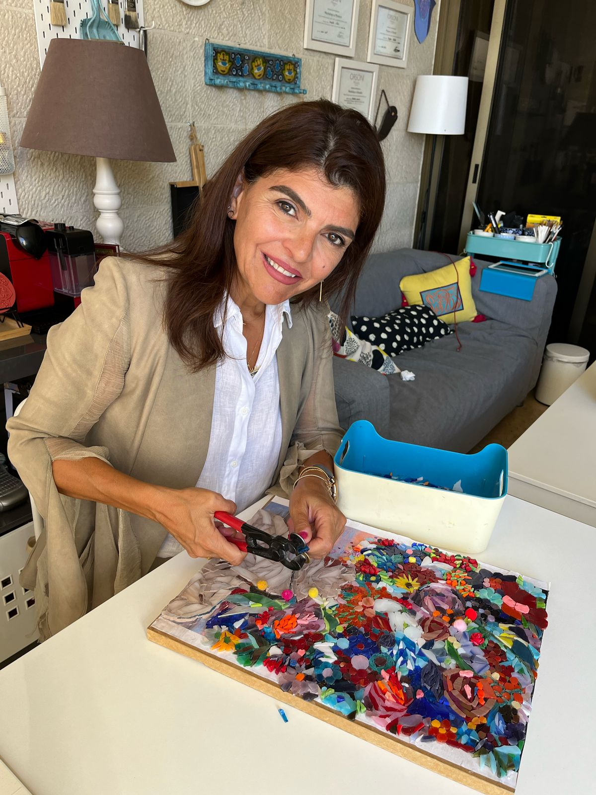

From rubble to radiance — handcrafted mosaics that heal, honor, and inspire.
The first person who introduced me to the world of mosaic art was my dearest friend Amani, may she rest in peace. When I used to go to her house, I would watch her work and ask questions. I remember she once told me, “You should try it, why not?” That sentence stayed with me, and here I am.
I began my journey in 2013 and have taken various workshops at the Orsoni Mosaic Institute in Venice. Since then, I haven’t stopped. Every time I enter my atelier and work on something, I experience a different kind of joy. That flame within me lights up. In memory of Amani, and with love, I now teach this art and share it with the world.
Captures the glamour of NYC’s Times Square with shimmering tiles and dynamic energy.
A close-up of an owl’s intense gaze using black, white, and orange smalti glass tiles.
A portrait of a woman with tribal adornments symbolizing strength, heritage, and elegance.
A somber yet powerful woman in a red hat explores sorrow and the nature of hidden emotions.
A wise Indian man portrayed with a bright yellow turban, embodying heritage and dignity.
A tender tribute to the bond between humans and cats, through the eye of a feline.
Email: majida.khader@yahoo.com
Instagram: @mijjmosaics